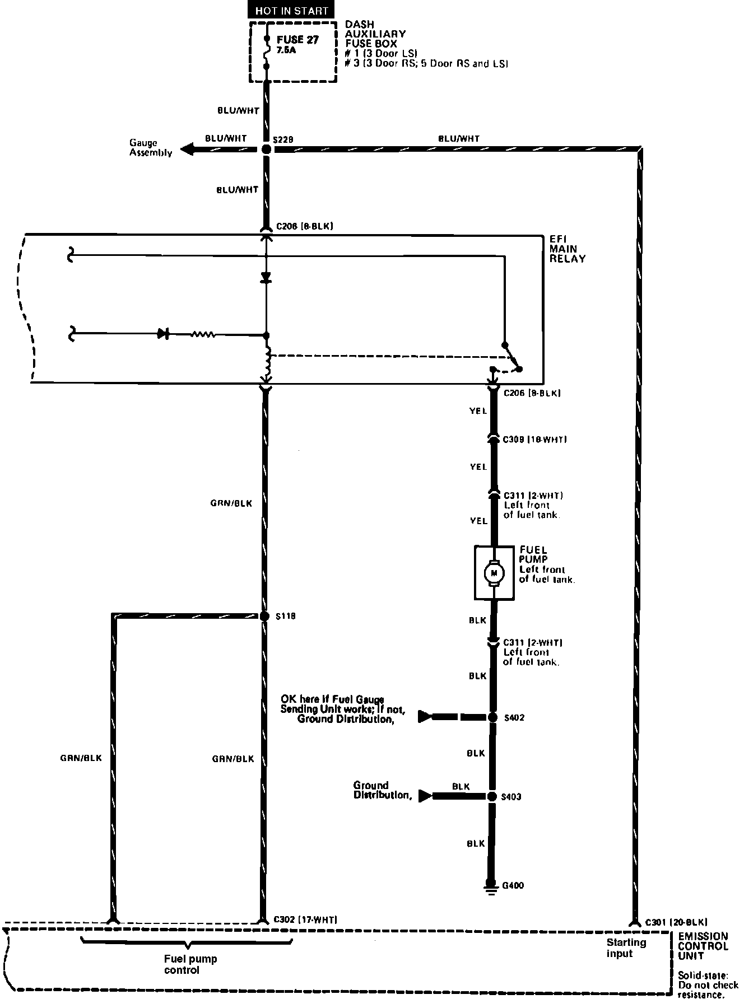

Operation CHARM
: Car repair manuals for everyone.
Home
>>
Acura
>>
1988
>>
Integra L4-1590cc 1.6L DOHC FI
>>
Repair and Diagnosis
>>
Powertrain Management
>>
Fuel Delivery and Air Induction
>>
Diagrams
>>
Electrical Diagrams
>>
Part 2 of 6
Part 2 of 6
Electronic Fuel Injection-Part 2 Of 6:
